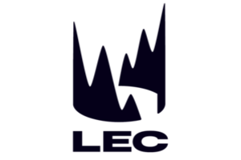

Découvrez l'univers compétitif de League of Legends, le jeu qui a révolutionné le monde de l'esport. Que vous soyez un vétéran de la Faille de l'Invocateur ou un nouveau venu,
notre site vous offre une plongée dans le monde fascinant des compétitions de LoL.
Sélectionnez une région pour voir la liste des meilleurs joueurs.

Meilleurs joueurs LCK
Faker
Lee Sang-hyeok, connu sous le pseudonyme "Faker", est souvent considéré comme le meilleur joueur de League of Legends de tous les temps. Il a remporté de nombreux titres et est une icône de l'esport.
Ruler
Park "Ruler" Jae-hyuk est un joueur coréen de League of Legends, reconnu pour ses compétences exceptionnelles en tant qu'ADC. Il a été un acteur clé dans les victoires internationales de son équipe et continue d'être un talent de premier plan sur la scène mondiale.
Chovy
Jeong "Chovy" Ji-hoon est un talentueux mid laner coréen connu pour ses mécaniques exceptionnelles et son intelligence de jeu. Il a rapidement gravi les échelons pour devenir l'un des meilleurs mid laners de la LCK.
Meilleurs joueurs LEC
Caps
Rasmus "Caps" Winther est un joueur européen de League of Legends, connu pour son incroyable flexibilité et son talent en tant que mid laner. Il a joué pour certaines des équipes les plus prestigieuses et a marqué la scène européenne de son empreinte.
Rekkles
Carl Martin Erik "Rekkles" Larsson est un joueur suédois de League of Legends, connu pour son rôle d'ADC et ses nombreuses victoires avec Fnatic. Il est une figure emblématique de la scène européenne.
Perkz
Luka "Perkz" Perković est un joueur croate de League of Legends, connu pour sa flexibilité à jouer en mid lane et en ADC. Il a remporté de nombreux titres en Europe et est reconnu pour son leadership et son talent exceptionnel.
Meilleurs joueurs LPL
Uzi
Jian "Uzi" Zihao est un joueur chinois de LoL, célèbre pour son incroyable talent en ADC. Il a laissé une empreinte indélébile dans le monde de l'esport avec ses performances époustouflantes.
Doinb
Kim "Doinb" Tae-sang est un mid laner coréen jouant en LPL, connu pour son style de jeu innovant et son leadership. Il a mené son équipe à plusieurs victoires internationales.
TheShy
Kang "TheShy" Seung-lok est un top laner coréen jouant en LPL, célèbre pour son talent mécanique et son impact dans les parties. Il a contribué à la domination de son équipe sur la scène internationale.
Meilleurs joueurs LCS
Doublelift
Yiliang "Doublelift" Peng est un joueur légendaire de la région NA. Connu pour ses performances exceptionnelles en ADC, il a marqué l'histoire de la LCS avec ses victoires et sa longévité dans la scène compétitive.
CoreJJ
Jo "CoreJJ" Yong-in est un support sud-coréen, champion du monde, ayant eu un impact significatif en LCS avec Team Liquid. Reconnu pour son leadership et ses compétences mécaniques, il est l'un des meilleurs supports de l'histoire de League of Legends.
Impact
Jung "Impact" Eon-yeong est un top laner coréen ayant trouvé du succès en LCS. Il est connu pour sa constance et sa capacité à rester au sommet de son jeu pendant de nombreuses années.